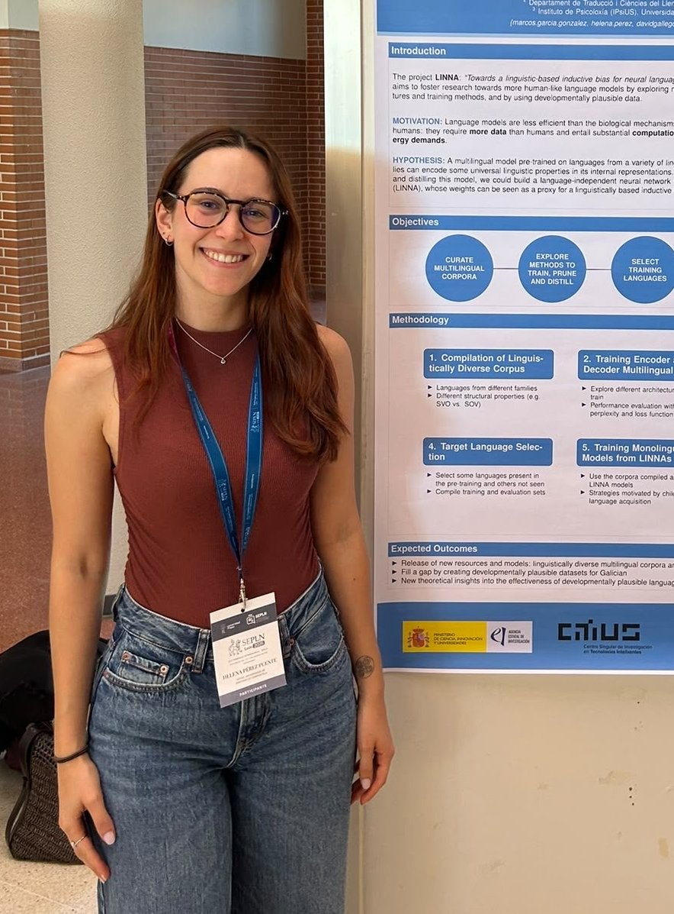

2026 – 2030
PhD in Linguistics
CiTIUS, University of Santiago de Compostela (USC)
Computational Linguistics · Natural Language Processing
PhD student in Computational Linguistics at CiTIUS (USC)
I am a computational linguist working at the intersection of language and artificial intelligence. My research focuses on language acquisition in small language models, with particular interest in low-resource languages and multilingualism.

Member of the LINNA project team, which investigates linguistically grounded inductive biases for neural language modelling.
Collaboration with the Galician team in the MultiplEYE COST Action, a multilingual eye-tracking-while-reading initiative.
Master's Degree Internship.
Research developed during my summer intership at CiTIUS in 2024.
Research developed from the Master's thesis, presented at the XLII International Conference of the Spanish Society for Natural Language Processing (SEPLN) and published in the SEPLN journal.
Presents the methodology for building BabyLM-GL, the first Galician corpus inspired by human language acquisition, developed within the LINNA project.
Introduces a large-scale, document-level multilingual corpus with paragraph-level alignment across 39 languages, designed to support cross-linguistic research on reading and language processing.
Examines subject–verb agreement in Galician and Portuguese, comparing how neural language models and human speakers process syntactic structure.
Presented research on the meta-evaluation of abstractive summarization in Galician at the XLII International Conference of the Spanish Society for Natural Language Processing in León.
Participated in the poster session presenting work connected to the LINNA project at CiTIUS.
My article on subject–verb agreement in Galician and Portuguese neural language models was published in the journal's “New Perspectives” section.
For research enquiries and collaborations, find me through my institutional and academic profiles.